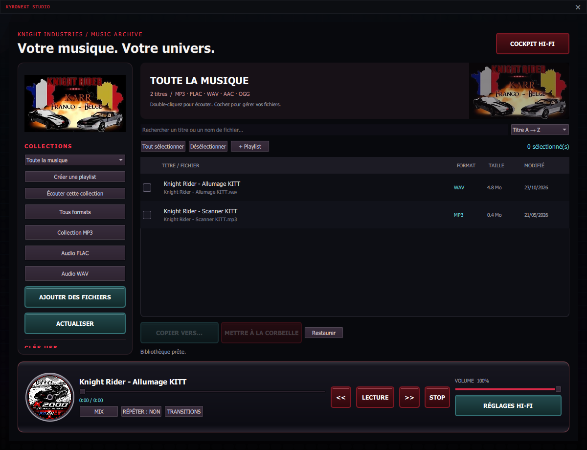
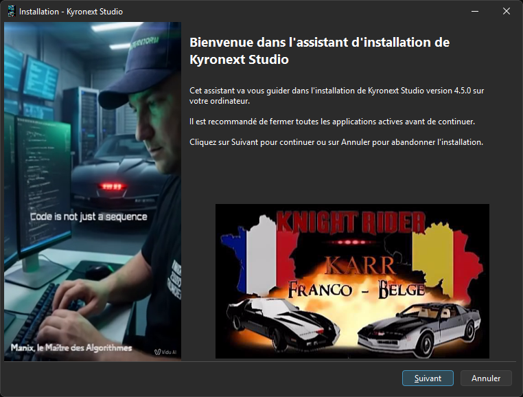

Une vraie bibliothèque
Organisez vos collections, retrouvez vos favoris et profitez de la lecture continue, du mode aléatoire et de la répétition.
Kyronext Studio réunit lecteur Hi-Fi, bibliothèque musicale et téléchargements MP3 dans une interface dédiée à l’univers KITT.

BIEN PLUS QU’UN LECTEUR
Organisez vos collections, retrouvez vos favoris et profitez de la lecture continue, du mode aléatoire et de la répétition.
Ajoutez plusieurs liens, suivez la file et relancez les échecs. La bibliothèque se met à jour après les téléchargements réussis. Utilisez des contenus dont le téléchargement est autorisé.
Prévisualisez les copies vers une clé USB : espace libre, taille et doublons. Les fichiers existants ne sont pas écrasés.
LA SIGNATURE KNIGHT RIDER

PRÊT POUR VOTRE COCKPIT
Installateur Windows 10 / 11 · 64 bits
Télécharger pour Windows ↓Windows peut afficher une alerte SmartScreen : cet installateur n’est pas signé numériquement. Vérifiez sa provenance et son empreinte avant de décider de l’ouvrir.
Le premier lancement demande le prénom de la personne qui utilise le logiciel. Les préférences sont propres à son compte utilisateur.
Oui. L’écoute de vos fichiers locaux reste disponible sans Internet. Certains contenus en ligne peuvent être indisponibles ou soumis à des restrictions.
Des scripts Linux historiques sont conservés ci-dessous. Ils ne constituent pas la version Windows 4.5.0 et n’ont pas été validés dans cette livraison.
Script Linux x86_64 ↓ · Script Linux ARM64 ↓Partagez vos retours et faites découvrir les logiciels. Voir la page de soutien.
UN AUTRE OUTIL BY MANIX
Filtrage DNS réseau pour Windows 11 et Jetson AGX Orin, avec tableau de bord KITT, icône animée et guide illustré.